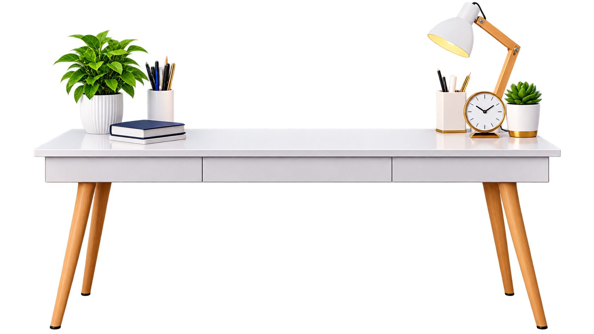

Thème à renseigner
Titre de la publication mise en avant
Résumé présentant la question traitée.
Quels risques traiter en priorité ? Jusqu’où dépendre d’un fournisseur ? Comment intégrer l’IA sans perdre la maîtrise de ses données ?
Analyses, prises de position et guides : les experts SICARE partagent leurs lectures des enjeux cyber pour éclairer vos décisions. Nos publications relient les choix techniques aux réalités de l’activité, aux responsabilités et aux compétences nécessaires pour agir.
Résumé présentant la question traitée.
Comprendre un risque, examiner les options, préparer une décision : retrouvez nos publications par thème.
Résumé court de la publication.
Résumé court de la publication.
Résumé court de la publication.

Résumé court de la publication.

Résumé court de la publication.

Résumé court de la publication.
Sécuriser les accès de maintenance d’un site industriel, préparer la continuité des soins ou prioriser la reprise des services d’une collectivité : les enjeux cyber prennent leur sens dans le contexte de chaque organisation.
Nos publications examinent ces situations pour préciser les risques, les contraintes et les réponses possibles.

Les décisions cyber engagent aussi des choix d’organisation, des dépendances économiques et des usages technologiques.
Selon les sujets, des regards croisés avec Syngularit.ai, Dyvision7 ou Geopoliteck enrichissent la réflexion sur l’intelligence artificielle, l’intelligence économique et les enjeux géopolitiques du numérique. Chaque contribution est attribuée pour identifier clairement les expertises et les points de vue exprimés.
Nos publications sont signées et datées. Elles précisent leurs sources et distinguent faits, hypothèses et prises de position. Les exemples respectent la confidentialité des organisations concernées.
Vous devez prioriser vos actions, évaluer une dépendance ou sécuriser un nouvel usage ? Échangeons sur vos objectifs, vos contraintes et les options à votre disposition.